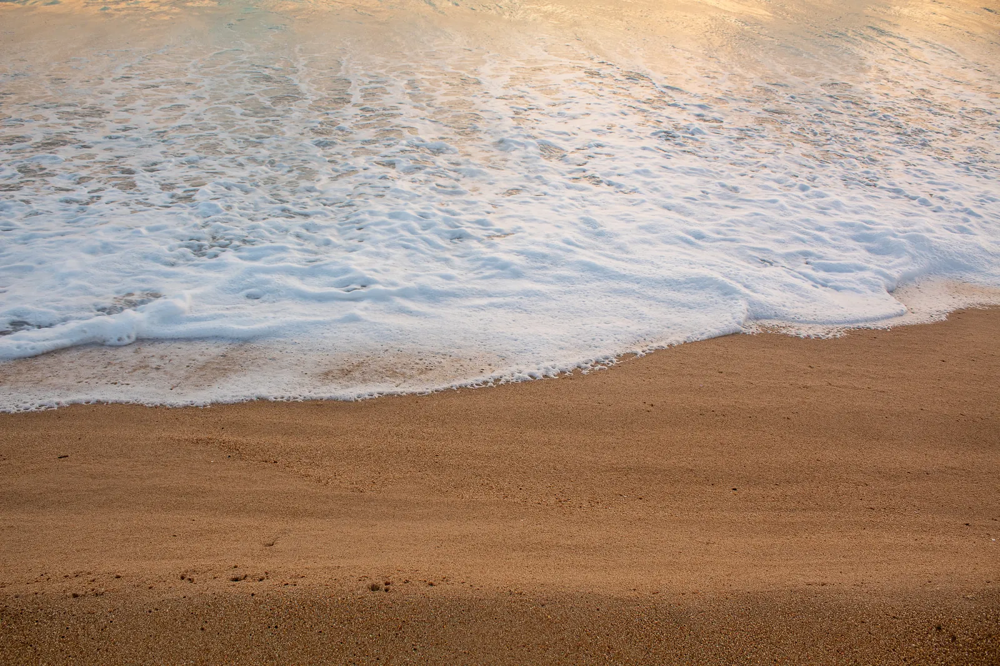
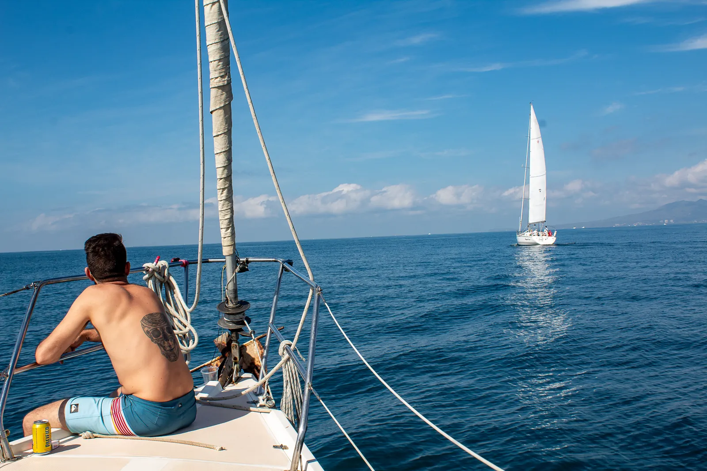
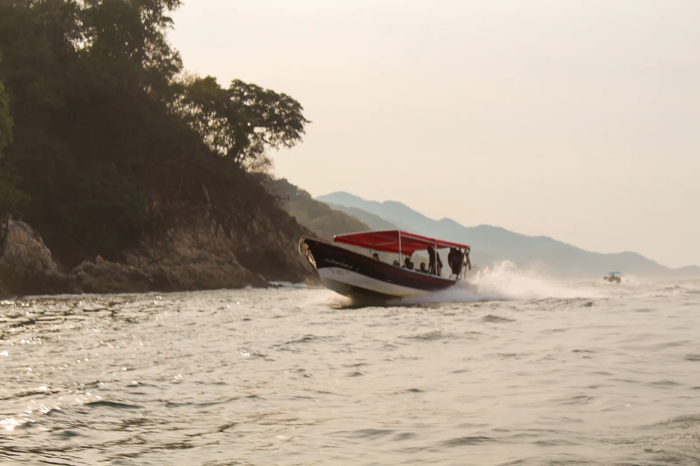

Chimo
Un pueblo pesquero de Cabo Corrientes, en el extremo sur de la Bahía de Banderas. Doscientas ochenta personas y una playa que casi siempre está sola.
Qué es este lugar
Doscientas ochenta personas y treinta kilómetros de costa
Chimo es una localidad del municipio de Cabo Corrientes, Jalisco. Viven alrededor de 280 personas fijas, aunque el número sube en temporada de pesca. Está a unos 30 kilómetros de Puerto Vallarta siguiendo la línea de costa hacia el sur, y no hay carretera pavimentada que llegue hasta acá.
El día empieza temprano. Las pangas salen antes de que amanezca y regresan a media mañana con pulpo, que es de lo que vive el pueblo. El muelle lleva más de veinte años a medias, así que todo se baja en la playa, a mano. Hay centro de salud, aunque casi nunca hay médico.
Lo demás es el mar. Se oye todo el día, y en las noches sin luna se oye más.




Cómo se llega
Treinta kilómetros de costa, tres maneras de recorrerlos
Panga desde Boca de Tomatlán
Lancha privada desde Vallarta
Terracería vía El Tuito
La última panga sale por la tarde. Si tu vuelo aterriza después, duerme en el Depa Vallarta y sal al día siguiente. Nosotros coordinamos la lancha.
Lo que hay y lo que no
Preferimos decirlo antes y no que te enteres al llegar.
Sí hay
- Wifi y aire acondicionado
- Planta generadora de luz
- Alberca privada y acceso a la playa
- Restaurantes de playa en el pueblo
- Pescado y pulpo del día
- Centro de salud
No hay
- Cajero automático
- Farmacia
- Supermercado
- Médico de planta
- Carretera pavimentada hasta la puerta
La gente
Quiénes viven en Chimo
Esta sección va a llevar los retratos y los nombres de la gente del pueblo: quién te lleva en panga, quién cocina, quién sube a las cascadas. Es lo único que ninguna otra casa de la costa puede copiar, y por eso preferimos hacerlo bien y no con prisa.
Sesión de fotos pendiente.
Alrededores
Qué hay cerca
Yelapa
El pueblo más visitado del corredor sur. Mismo mar, mucha más gente.
Quimixto
Cascada y paseo a caballo. Se ha publicado como el pueblo más virgen de México.
Majahuitas
Playa pequeña de acceso solo por mar.
Las Ánimas
Primera parada del corredor, con restaurantes de playa.
Playa Corrales
Oleaje fuerte para surfistas, con un faro de 1902.
Tehuamixtle
Bahía entre acantilados, famosa por sus ostiones. Hay un barco camaronero hundido en 1920 que se bucea.
Mayto
Playa abierta de 12 km, con campamento tortuguero desde 2005.
El Tuito
Cabecera municipal a 1 085 metros, de 5 a 10 °C más fresco. Queso panela, café, miel y raicilla.
Antes de venir
Qué llevar
- Efectivo en pesos. No hay cajero.
- Los medicamentos que necesites. No hay farmacia.
- Repelente y bloqueador.
- Zapato cerrado si piensas caminar a las cascadas.
- Una batería portátil.
- Bolsa seca si vas a salir en panga con equipo.
Dónde está
Chimo, Cabo Corrientes
A unos 30 kilómetros al sur de Puerto Vallarta siguiendo la costa. No hay carretera pavimentada hasta el pueblo: se llega en panga o por terracería desde El Tuito.
El mapa es de Google. Se carga solo si tú lo pides, para no dejarte cookies sin avisar.
Cuándo venir
El año en Chimo
| Ene | Feb | Mar | Abr | May | Jun | Jul | Ago | Sep | Oct | Nov | Dic | |
| Ballena jorobada | Temporada oficial | al 23 | 8 dic | |||||||||
| Tortuga golfina | Anidación | Anidación y liberación en Mayto | ||||||||||
| Lluvias y cascadas | Ríos y cascadas con agua | |||||||||||
| Temporada | Alta | Baja · estancias largas y retiros | Alta | |||||||||
Preguntas frecuentes
Lo que nos preguntan antes de venir
¿Cuánta gente vive en Chimo, Jalisco?
Alrededor de 280 personas. Es una localidad del municipio de Cabo Corrientes, Jalisco, y la cifra fluctúa entre 180 y 300 según la temporada de pesca y si se cuentan las rancherías cercanas.
¿Cómo se llega a Chimo desde Puerto Vallarta?
De tres formas. En lancha, unas 2 horas 30 minutos desde Puerto Vallarta. En panga desde Boca de Tomatlán, que está a unos 40 minutos del aeropuerto. O por tierra vía El Tuito, con cerca de 3 horas de terracería. No hay carretera pavimentada hasta el pueblo.
¿A qué distancia está Chimo de Puerto Vallarta?
Unos 30 kilómetros siguiendo la línea de costa hacia el sur, dentro del municipio de Cabo Corrientes, Jalisco.
¿Cuándo se pueden ver ballenas en Chimo?
La temporada oficial de avistamiento de ballena jorobada en Bahía de Banderas va del 8 de diciembre al 23 de marzo, según las fechas publicadas en el Diario Oficial de la Federación. Los prestadores de servicio necesitan permiso y curso.
¿Hay cajero, farmacia o supermercado en Chimo?
No. Hay centro de salud, aunque casi nunca hay médico de planta, y restaurantes de playa. Conviene llegar con efectivo en pesos y con los medicamentos que se necesiten.
¿Hay wifi y luz en Villa Chimo?
Sí. La casa tiene wifi, aire acondicionado y planta generadora de luz.
¿Hay alacranes o fauna en Chimo?
Es una zona selvática, así que entran insectos y de vez en cuando algún alacrán. La casa se fumiga y se revisa. Si alguien de tu grupo es alérgico a la picadura de alacrán, avísanos al reservar.
¿De qué vive Chimo?
De la pesca. Se comercializa principalmente pulpo y pescado. El muelle del pueblo lleva más de veinte años sin terminarse, lo que limita la actividad.
¿Cuánto cuesta Villa Chimo?
150 dólares por noche más impuestos, por la casa completa, hasta 4 personas. Hay descuento por semana, a partir de 15 noches y por mes.